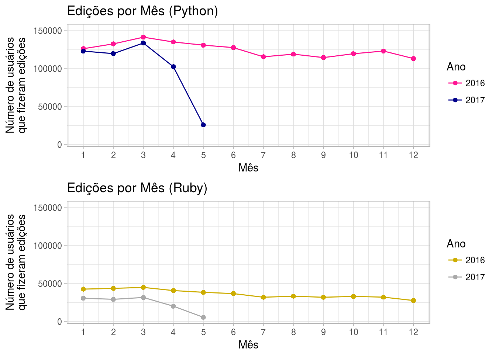
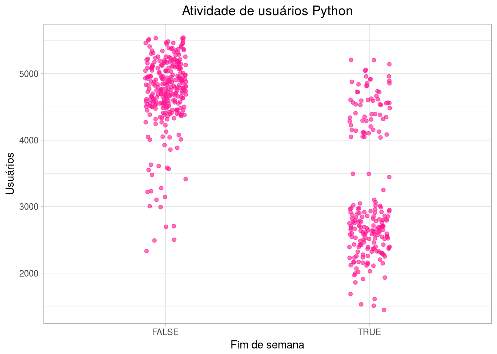
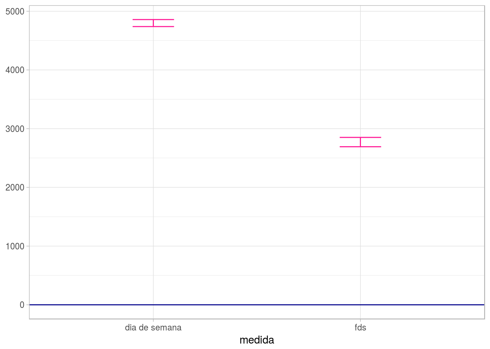
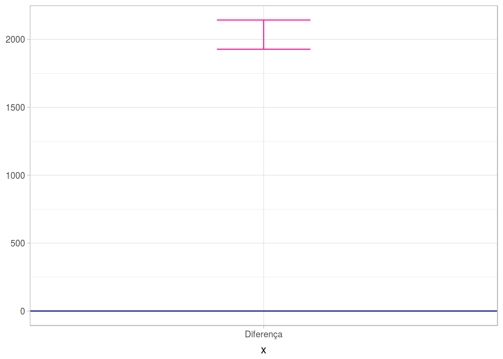
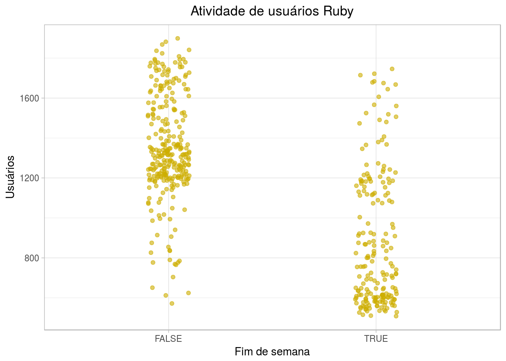
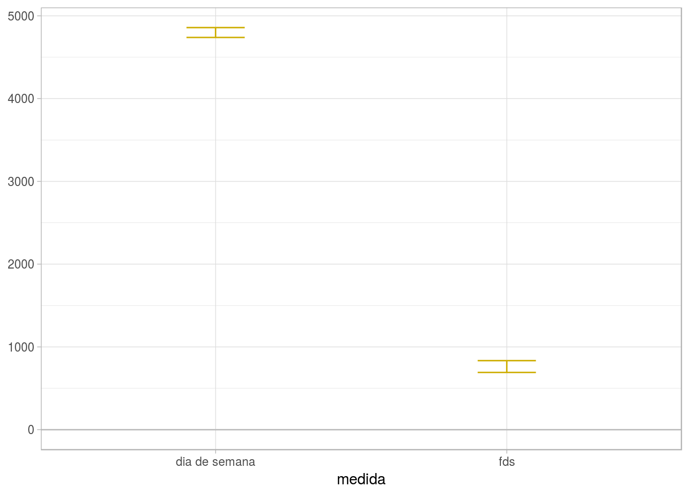
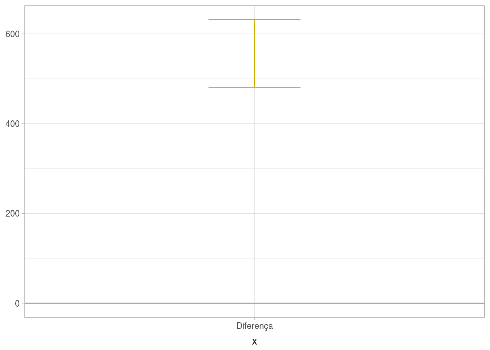
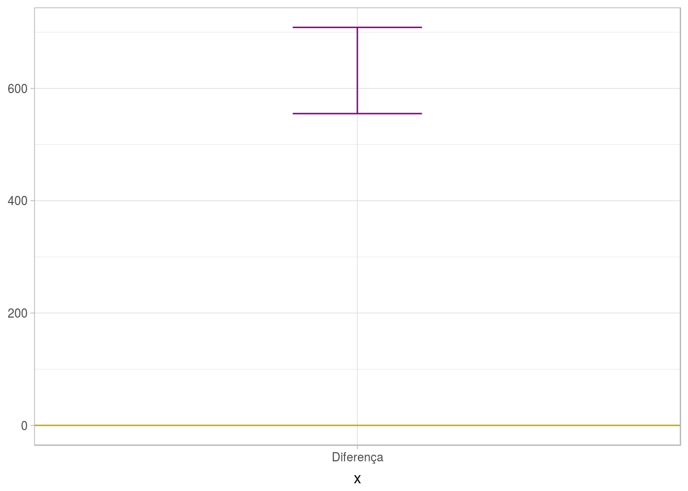

Ítalo Batista
Esta análise, realizada no contexto da disciplina Análise de Dados 1 (Computação @ UFCG), tem por objetivo avaliar a popularidade de linguagens de programação no período entre 2016 e 2017 segundo dados registrados no GitHub. Essa análise serve de mote para trabalharmos conceitos de inferência, intervalos de confiança, significância, entre outros.
Usaremos uma amostra de dados que contém informações sobre quantos usuários fizeram atividade no GitHub usando uma determinada linguagem de programação. É importante ressaltar que não temos dados de todos os repositórios nem de todos os usuários. Temos apenas uma amostra. Iremos usar técnicas de inferência para podermos fazer afirmações sobre toda a população a partir dos dados da amostra.
Iremos orientar esta análise segundo as seguintes perguntas:
Para uma determinada linguagem, há uma diferença significativa na sua popularidade durante a semana e durante o fim de semana? Essa diferença é grande?
Comparandao duas linguagens, existe uma diferença significativa entre elas na sua variação de popularidade nos finais de semana?
Vamos importar as bibliotecas que serão necessárias para a manipulação dos dados.
Vamos ver quais são as linguagens de programação disponíveis para serem analisadas e vamos escolher duas para trabalharmos.
unique(dados$file_extension) %>%
sort()## [1] c cc config cpp cs csproj css eot
## [9] gif go gradle h html ico java jpg
## [17] js json less lock m map md pbxproj
## [25] pdf php png py rb rst scss sh
## [33] sql svg swift ts ttf txt woff xml
## [41] yaml yml
## 42 Levels: c cc config cpp cs csproj css eot gif go gradle h html ... ymlSelecionaremos, dentre esse conjunto diverso, as linguagens Python e Ruby.
Nossos dados atualmente têm a seguinte estrutura:
## file_extension month_day the_month the_year users
## 1 py 2 3 2016 5542
## 2 py 24 2 2016 5535
## 3 py 10 3 2016 5531
## 4 py 12 4 2016 5516
## 5 py 3 3 2016 5503
## 6 py 9 3 2016 5502Cada observação contém a linguagem de programação (file_extension, que propriamente dito é a extensão do arquivo modificado no GitHub, mas, a partir dela, podemos mapear para a linguagem de programação em questão), quantos usuários fizeram atividade nessa linguagem (users) e o dia do mês (month_day), o mês (the_month) e o ano (the_year) em que ocorreram as modificações.
Vamos obter, para cada observação, o dia da semana (ex: sábado) em que ocorreram as modificações. Isso vai nos ajudar a trabalhar com maior facilidade.
Para entender melhor como foi a movimentação no github para essas linguagens, vamos visualizar quantos usuários fizeram movimentação por mês. Primeiro, vamos calcular o número de usuários que programaram para uma determinada linguagem em um mês-ano específico.
Visualizando a “linha do tempo” para as linguagens:

Para essa amostra, portanto, conseguimos observar algumas coisas interessantes. Primeiro, Python parece ser mais popular que Ruby. Contudo, ambas as linguagens não tiveram muita variação de popularidade entre janeiro de 2016 e março de 2017. Mantiveram-se regulares.
Vamos agora responder as nossas perguntas.
Antes de tudo, vamos incluir nos nossos dados a informaçaõ de quando uma determinada movimentação no github foi realizada durante o fim de semana ou não.
Vamos primeiro analisar o caso da linguagem Python. Com o gráfico abaixo, vamos identificar o comportamento dessa linguagem diferenciando entre dias que compõe o final de semana (sexta, sábado e domingo) e o restante dos dias.

Cada ponto é um dia em que houve atividade no GitHub para a linguagem Python. Esse dia pode ter sido no final de semana ou não. Vemos que há uma concentração de dias que não são finais de semana e em que houve um número alto de usuários que programaram em Python. Em contrapartida, há uma concentração de dias que são do final de semana e em que houve um número mais baixo de usuários. Isso nos sugere que Python é mais popular em dias de semana do que em finais de semana.
Como estamos trabalhando apenas com uma amostra, essa visualização não é suficiente para responder com confiança se python é mais popular no final de semana ou não. Usaremos uma técnica de inferência chamada bootstrap para coletar informações da amostra e criar um panorama onde nossas conclusões tenham cerca de 95% de confiança.
Em linha gerais, a técnica bootstrap funciona da seguinte maneira: 1. Reescreve um conjunto de dados do mesmo tamanho da amostra original n vezes. 2. Calcula a estatísca para cada amostra gerada; 3. Encontra o desvio padrão desta estatística;

Vemos que os intervalos para dia de semana e final de semana não se interceptam. Além disso, para dia da semana, o intervalo atineg valores mais altos. Isso nos leva a concluir que Python é significatvivamente mais popular durante os dias da semana.
Vamos agora ver a diferença para as medianas entre os dois grupos (final de semana ou não).

De acordo com este gráfico, como o intervalo de confiança é positivo e alto, podemos afirmar que a diferença de popularidade para Python entre os dias de semana e os finais de semana é significante.
Agora vamos analisar para a linguagem Ruby.
Visualizando seu comportamento:
dados.rb = dados %>%
filter(file_extension == "rb") %>%
mutate(fds = is_weekend(week_day))
dados.rb %>%
ggplot(aes(x = fds, y = users)) +
geom_jitter(width = .1, color = "gold3", alpha = 0.6) +
labs(title = "Atividade de usuários Ruby", x = "Fim de semana", y = "Usuários") +
theme(plot.title = element_text(hjust = 0.5))
De acordo com o gráfico, aparentemente não há grande diferença de popularidade entre dias de semana e finais de semana. Contudo, vemos alguma concentração de um número maior de usuários quando é dia de semana e uma concentraçao menor de menos usuários quando é final de semana. Aqui também vamos usar bootstrap para investigar melhor.

Aqui vemos o mesmo caos que Python. Os intervalos para dia de semana e final de semana não se interceptam. Além disso, para dia da semana, o intervalo atineg valores mais altos. Isso nos leva a concluir também que Ruby é significatvivamente mais popular durante os dias da semana.
Vendo de outro modo, também vamos ver a diferença para as medianas entre os dois grupos (final de semana ou não).

O intervalo de confiança é positivo e alto. Igualmente podemos afirmar que a diferença de popularidade para Ruby entre os dias de semana e os finais de semana é significante.
Respondendo a nossa segunda pergunta. Estaremos comparando a popularidade, nos fins de semana, entre as duas lingaugens, para verificar qual delas tem maior variação.

Como o intervalo é positivo e alto, podemos afirmar que há uma diferença significativa na popularidade de Python e Ruby entre os programadores nos fins de semana.